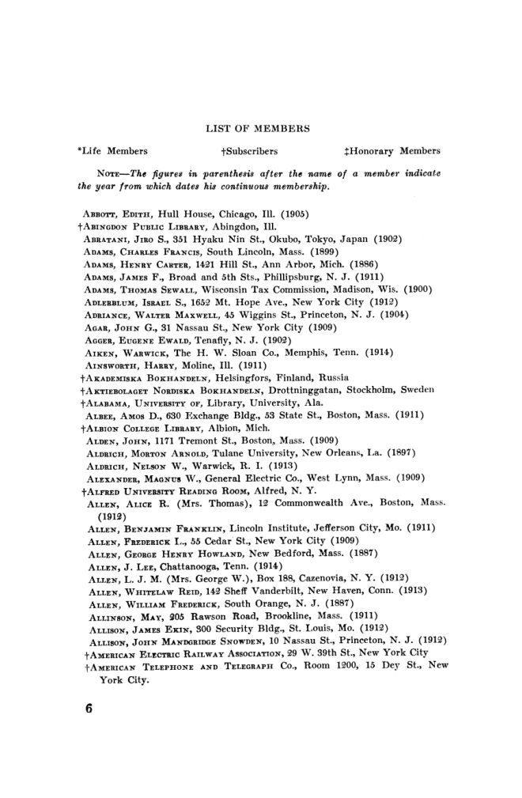

Manual de 1914: a associação ganha um mapa dos seus sócios
Leitura: 5 min
O manual de 1914 repete o estatuto de 1911 e a anuidade de cinco dólares, mas acrescenta um índice geográfico de sócios e assinantes, do Alabama a Wyoming e de Buenos Aires a Tóquio.


Quem quisesse saber, em 1914, quantos economistas da associação moravam em Denver ou em Tóquio já não precisava percorrer a lista alfabética. O manual daquele ano traz, pela primeira vez, um índice geográfico de sócios e assinantes: 39 páginas, das 60 às 98, com os nomes agrupados por estado, cidade e país.
O Hand Book of the American Economic Association de 1914 saiu como suplemento do nº 4 do vol. 4 da American Economic Review, em dezembro, impresso pela Princeton University Press. O sumário tem quatro partes: propósitos da associação, estatuto, lista de sócios e assinantes e o novo índice geográfico, seguidos do catálogo de publicações. Diferentemente do manual de 1913, comentado no nº 126, não abre com a relação de dirigentes.
O que mudou desde 1913?
Pouca coisa no texto institucional. A apresentação repete os parágrafos de 1913, com três atualizações. Os assinantes, que eram duzentos e sessenta, passam a ser cerca de trezentos, entre eles as bibliotecas mais importantes do país. A reunião anual de 1914 é anunciada para Princeton, em Nova Jersey, nas festas de fim de ano. E a Review, que tinha menos de três anos, agora tem menos de quatro e, diz o texto, figura entre as revistas científicas sérias do país.
“Embora tenha menos de quatro anos, já conquistou um lugar para si.” (“Though less than four years old, it has already made a place for itself”)
O estatuto é o mesmo revisto na reunião anual de dezembro de 1911. Os objetivos seguem sendo a pesquisa econômica, em especial o estudo histórico e estatístico das condições reais da vida industrial, as publicações e a plena liberdade de discussão, sem posição partidária. O conselho editorial cuida das publicações; o editor-gerente tem mandato de três anos; e o Comitê Executivo reúne dirigentes, ex-presidentes, o presidente do conselho editorial e seis membros eleitos.
O que mostra o índice geográfico?
O índice tem duas partes. A primeira, Estados Unidos e Canadá, segue a ordem alfabética dos estados, do Alabama a Wyoming, incluindo o Distrito de Colúmbia e o Havaí, e termina com as províncias canadenses, de Brandon a Winnipeg. As seções mais longas são as de Nova York e de Massachusetts. Os assinantes, marcados por um sinal próprio, são sobretudo bibliotecas: de universidades estaduais, de assembleias legislativas e bibliotecas públicas de cidades como Los Angeles e Denver.
A segunda parte, outros países, vai da Argentina à Suíça. Na Inglaterra aparecem Alfred Marshall, A. C. Pigou e J. N. Keynes, em Cambridge, F. Y. Edgeworth e Edwin Cannan, em Oxford, e J. A. Hobson, em Limpsfield. Em Viena está E. von Böhm-Bawerk; em Berlim, Adolph Wagner; em Paris, Charles Gide e Paul Leroy-Beaulieu. A seção do Japão é das mais extensas fora da América do Norte, com sócios e assinantes em Tóquio, Kyoto, Osaka e Kobe, entre eles escolas superiores de comércio e o Ministério das Finanças. Há ainda nomes na China, na Índia, nas Filipinas, no Chile, no Peru, em Cuba e no México.
Quem estava na lista de sócios?
A lista alfabética mantém o formato de 1913: endereço, sinais para sócios vitalícios, assinantes e honorários, e, entre parênteses, o ano desde o qual a filiação é contínua. Ela vai de Edith Abbott, da Hull House de Chicago, sócia desde 1905, a um sócio da siderúrgica de Hanyang, na China. Entre os sócios vitalícios está Andrew Carnegie, de Nova York, com filiação contínua desde 1886; Henry Carter Adams, de Ann Arbor, também aparece com o ano de 1886. O manual não traz um total de sócios.
Na minha leitura
Na minha leitura, o índice geográfico é a novidade que dá sentido a este manual. A lista alfabética responde a quem pertence à associação; o índice responde a onde ela está, e isso tem uso prático para uma entidade cuja apresentação diz que as reuniões anuais servem para conter o particularismo criado pela distância. É também um retrato da difusão da economia como profissão: a mesma página reúne bibliotecas estaduais americanas, ministérios estrangeiros, escolas de comércio japonesas e os nomes que, na Europa, definiam a teoria econômica da época.
Glossário
- Assinante (subscriber)
- instituição ou pessoa que recebe as publicações sem ser sócia, como as bibliotecas.
- Índice geográfico
- relação dos sócios e assinantes organizada por lugar de residência, e não por ordem alfabética de nome.
- Sócio vitalício (life member)
- quem paga uma contribuição única e fica isento das anuidades.
- Mandato escalonado
- regra pela qual só parte de um colegiado é renovada a cada ano, para dar continuidade.
Documentos, periódicos e notas (4)
- Purposes of the American Economic Association — texto institucional (pp. 1–2). Repete a apresentação de 1913, com cerca de trezentos assinantes, a reunião de 1914 marcada para Princeton e a Review descrita como revista de menos de quatro anos; reafirma que a associação não é órgão de partido, seita ou instituição e que, salvo o editor da Review, os dirigentes não são remunerados. JSTOR
- Constitution of the American Economic Association — texto revisto na reunião anual de dezembro de 1911 (pp. 3–5). Mesmo estatuto de 1913: anuidade de cinco dólares, contribuição vitalícia de cem, até 25 sócios honorários estrangeiros, editor-gerente com mandato de três anos, conselho editorial e Comitê Executivo com mandatos escalonados. JSTOR
- List of Members (pp. 6–59). Relação alfabética de sócios e assinantes, com endereços, sinais para vitalícios, assinantes e honorários e o ano de início da filiação contínua; ocupa 54 páginas. JSTOR
- Geographical Index of Members and Subscribers (pp. 60–98). Novidade do manual: os mesmos nomes agrupados por estado e cidade nos Estados Unidos e no Canadá e, depois, por país, da Argentina à Suíça; fecha com o catálogo das publicações da associação. JSTOR
Fontes
- Purposes of the American Economic Association (pp. 1–2). JSTOR · Internet Archive (PDF)
- Constitution of the American Economic Association (pp. 3–5). JSTOR · Internet Archive (PDF)
- List of Members (pp. 6–59). JSTOR · Internet Archive (PDF)
- Geographical Index of Members and Subscribers (pp. 60–98). JSTOR · Internet Archive (PDF)
- Sumário da edição no JSTOR: The American Economic Review, vol. 4, nº 4 (suplemento).
Documento em domínio público (EUA, publicado antes de 1931), via JSTOR Early Journal Content e Internet Archive. Resumo e comentário do autor deste site, sem afiliação com a American Economic Association. Encontrou um erro? Escreva: a correção é publicada no próprio texto, com data.
← Nº 131 · Setembro de 1914: títulos ferroviários, lucros ocultos e o Panamá Nº 133 · Salários que perdem para a comida e a nova Federal Trade Commission →